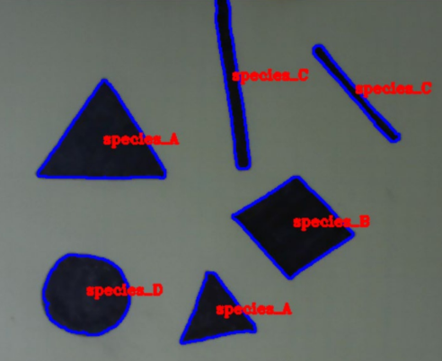

About Me
Hello there! I'm Zach, a rising junior at Purdue University studying Computer Engineering.
I have a passion for technology and solving complex problems through leading and collaborating with others. More specifically, I have been actively pursuing and leading various projects focused on robotic systems outside of classes.
Work Experience
STEP Intern @ Google
May - Aug 2020
Developed a portfolio to get familiar with web development skills/tools prior to the creation of a final web application capstone. This included:
- This page -- a start to my own personal/professional website!
- Server (backend) development here.
- ...
EP Intern @ Google
May - Aug 2019
The purpose of my project was to optimize the core database implementation of Sawmill Logs, an exabyte scale data lake that supports internal analytics. Some of my accomplishments include:
- Developed and tested a reusable API for Zstd dictionary compression in C++ and applied it to the primary storage format for Google logs database. This minimized compression overhead on small data by training Zstd dictionaries for certain log types with structured data. This was implemented for standard compression and compression streams.
- Created performance benchmarking tool to measure the benefits of the new design. Analyzed and visualized the performance results using Python and SQL.
- Improved the compression ratio by 10-15% for certain log storage types with minimal performance reduction.
CSSI Student @ Google
July 2018
- Selected for intensive three-week programming boot camp taught by Google software engineers aimed to develop a practical and extensive web application by the end of the program.
- Learned HTML/ CSS, JS, Python, Google App Engine over the three week period.
- Created CollegeConnect, a web app designed for students to interact and plan events with classmates. Implemented user accounts and email authentication utilizing App Engine's Cloud Datastore for account information storage. Also integrated "Connect Event" creation notifications for host and invitees using Google Calendar API and Python's email module.
Projects
AMP
Software Team Lead | July 2019 - Present
- Re-designed system structure & corresponding launch files for use of LiDAR based SLAM pkg (HectorMapping).
- Designed, implemented, and tested (in RViz simulation) the goal setting algorithm for ROS Navigation input.
- Developed the initial vision, mission, strategy and project management structure for the organization.
IEEE ROV
Software Team | Sep 2018 - May 2019
Developed Python ROS node that subscribed to a camera feed of an unknown path, performed image recognition (filtering, moment identification, line transforms, etc.), and published control output to a ROS topic.
Engineering Design
Robotic Systems Team Lead | Sep 2018 - May 2019
- Designed a small-scale prototype robot to autonomously and efficiently “transport material on Mars”.
- Created custom control algorithm in Python for path navigation, maneuvering, & cargo delivery systems.
- Developed SLAM algorithm in Python for robot tasked to traverse and map a maze while avoiding hazards.
Get In Touch
...